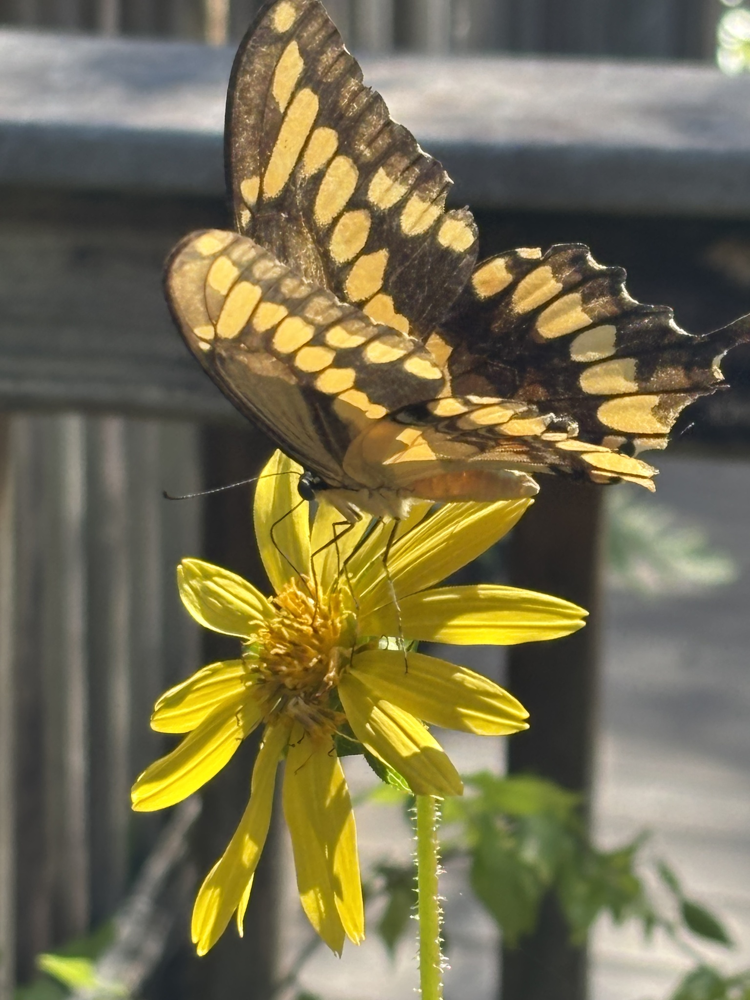
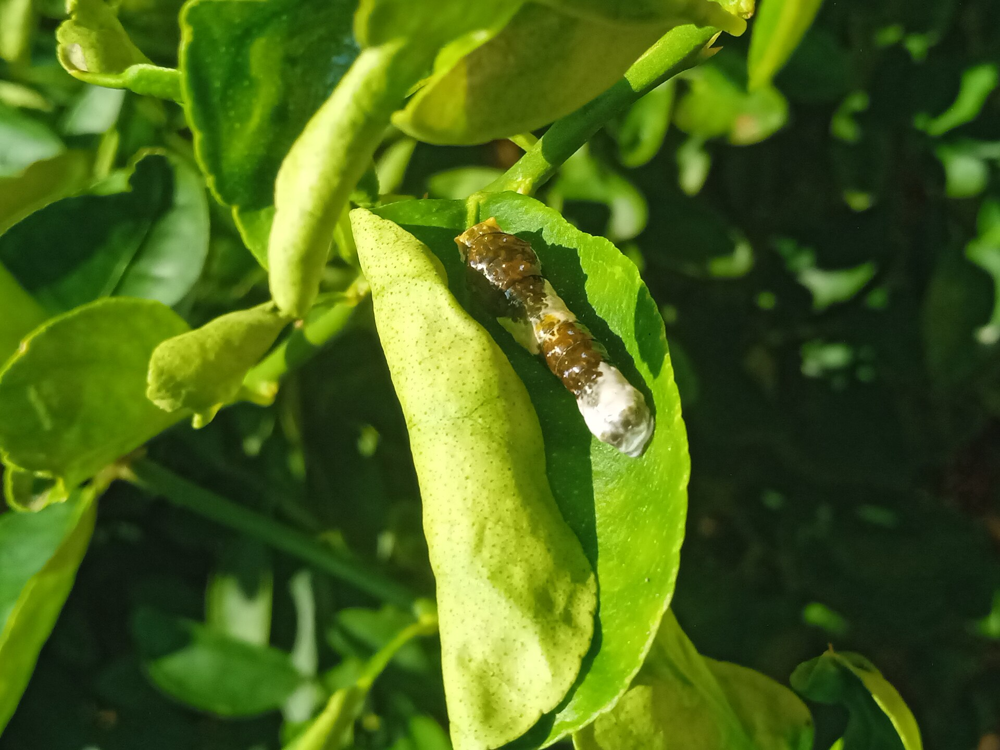

Papilio cresphontes
Common nowCape Coral yards with citrus or wild lime still have orange-dog caterpillars and the big yellow-banded adults. Year-round in Florida. The large one sailing through a backyard in August is usually this.

Yards, citrus, hammock edges, pineland.
Wild lime
Zanthoxylum fagaraHercules’-club
Zanthoxylum clava-herculiscultivated citrus
Citrus spp.common rue
Ruta graveolensstraighter yellow band; more swamp bay country